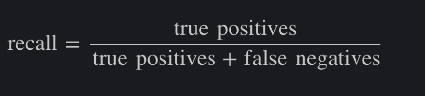
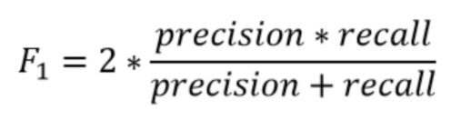

Training a machine learning model on an imbalanced dataset can introduce unique challenges to the learning problem. Imbalanced data typically refers to a classification problem where the number of observations per class is not equally distributed; often you'll have a large amount of data/observations for one class (referred to as the majority class), and much fewer observations for one or more other classes (referred to as the minority classes). For example, we are building a classifier to classify text-based essays as shortlisted or rejected - we likely have 4000 rejection for 1500 shortlisting that's quite an imbalance!
While creating a machine learning model we are trying to figure out the parameters that will allow us to correctly classify to the majority class. It can be seen that machine learning models are subjected to frequency bias in which they place more emphasis on learning from observations that occur more commonly.
When dealing with imbalanced data standard classification metrics do not adequately represent the model performance
Precision: is defined as the fraction of valid predictions of essays to rejected (true positives) among all the essays which were predicted to be rejected
Recall/sensitivity: is defined as the fraction of the examples which is correctly predicted to belong to rejected over all the essays that truly rejected
We can combine these two values into one by calculating the F1 score.
We have better precision and recall for our models and hence a better F1 score (and what does that mean?)
In the case of imbalanced data classification- The accuracy of the model is basically the total number of correct predictions divided by the total number of predictions. The precision of a class defines how trustable is the result when the model answers that a point belongs to that class. The recall/sensitivity of a class expresses how well the model is able to detect that class. The F1 score of a class is given by the harmonic mean of precision and recall.
For a given class, the different combinations of recall and precision have the following meanings :
- high recall/sensitivity + high precision: the class is perfectly handled by the model
- low recall/sensitivity + high precision: the model can’t detect the class well but is highly trustable when it does
- high recall/sensitivity + low precision: the class is well detected but the model also includes points of other classes in it
- low recall/sensitivity + low precision: the class is poorly handled by the model
In detail, we have data (1000 essays) classified all into the rejected class
ACCURACY = 9620+0/9620+380+0+0
REJECTED class precision = 9620/9620+380
SHORTLISTED class precision = 0/0+0 - mathematically impossible to calculate
REJECTED class recall/sensitivity= 9620/9620+0
SHORTLISTED class recall/sensitivity = 0/0+380
The accuracy is 96.2% as said earlier. The rejected class precision is 96.2% and the shortlisted class precision is not computable. The recall/sensitivity of the rejected class is 1.0 which is perfect (all the rejected essays have been labeled as such rejected itself). But the recall/sensitivity of the rejected class is 0.0 which is the worse case (shortlisted products were detected). Thus, we can conclude our model is not doing well for this shortlisted class. The F1 score is not computable for the shortlisted class and is 0.981 for the rejected class. In this example, our goal is to classify the essays equally efficiently in both classes, and looking at these values of the F1 score will indicate that we have to rethink our model. These metrics will prevent us from using a useless model.
We can start by giving an example dataset where there are 1000 values. Assume there are 999 rejections and 1 shortlisting. Imagine a case where the model just rejects everyone. The accuracy would be 99.9%, even though there is no ML. The high accuracy is because of an imbalanced dataset and not because the model is working. Accuracy does not take into account the fact that the model was not able to predict even a single shortlisting case correctly. This is where F1 score comes. Need your help in calculating the F1 score and further explaining how F1 score considers the fact that not even a single shortlisting is correct.
The accuracy is 99.9% (999/1000)
The model is 99.9 % precise in terms of rejecting an essay
100% recall/sensitive because it correctly detected all the rejection essays
But if we consider the cases of shortlisting an essay
The model’s precision to classify a shortlisting essay cannot be determined because it never shortlisted any of the essays
0% sensitive because it failed to classify the shortlisted essay
F1 score of the model not computable for shortlisting class and which indicates issues of our model. If we were evaluating our model just based on the accuracy we would have used a wrong model for classification.
Consider an example: An text classification system, which classified essays to shortlisted or rejected
Total data points: 207
Shortlisted: 72
Rejected: 145
Here the rejection rate is 145/207 = 70%
Imagine a case where there is no model and then we just say everyone is rejection.
The accuracy of the model is 70%
Now we will check the preciseness(how trustable the model is ?) for and sensitivity(how well the model is able to detect the correct prediction) for a shortlisted essay
The precision of the model towards rejection class is 70% and the model’s ability to detect the rejected essay is 100%
We can’t define the precision for classification towards shortlisting class since there is no essay has been shortlisted by the model
And the correctness towards classifying an essay to shortlisting class is 0%
And also the F1 score for the shortlisting class cannot be determined - which indicates that we are not considering the class shortlisting at all and which is a violation to our model’s goal and hence it is a wrong model
Our algorithm classifies correctly reject 135 essays and correctly classify 6 essays, whereas, 56 got wrongly rejected and 10 got wrongly shortlisted
The preciseness of this model toward the rejection is 70% and the model’s ability to detect the rejected essays are 93%
Similarly, the preciseness of this model toward the shortlisting essays is 38%
And the ability of the model to shortlist an essay is 1%
Which successfully balances to find relationships between the data to both rejection and the shortlisting classes with an F1 score of 0.8 for shortlisting class